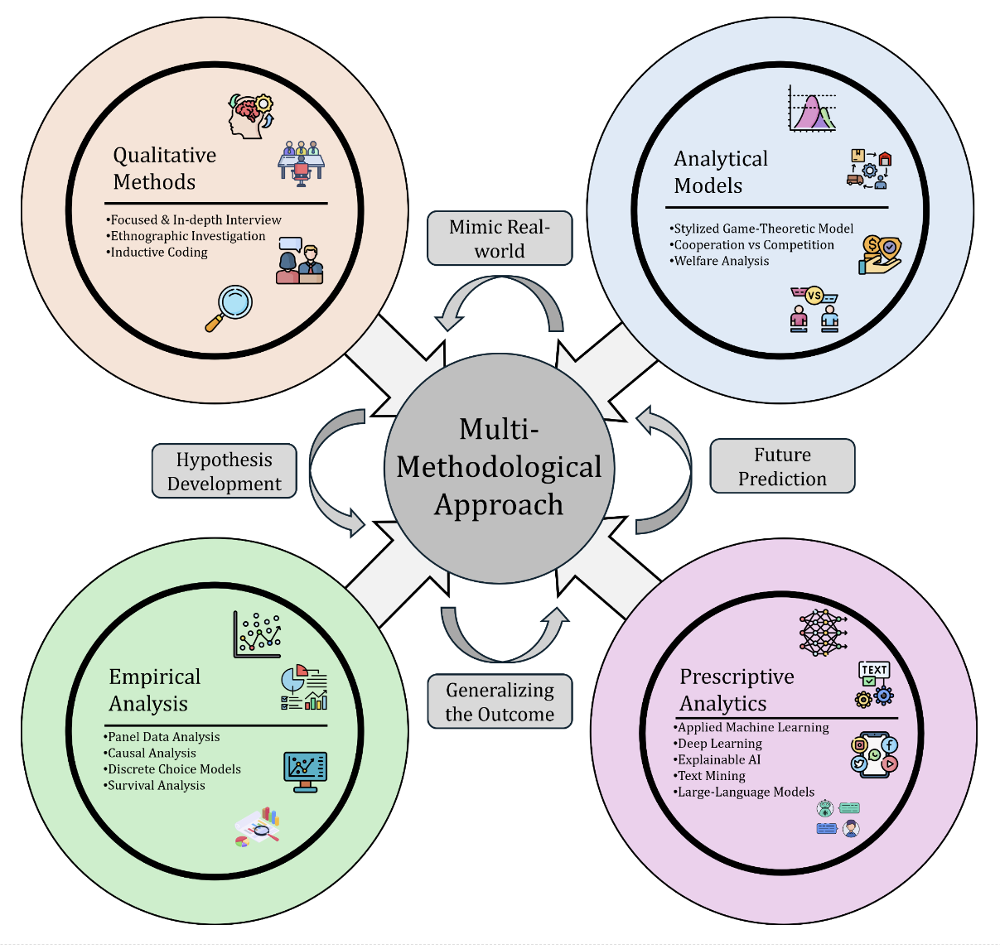

Area of Interest
Working in the intersection of Operations Management (OM) and Management Information Systems (MIS), with a strong focus on contributing to sustainable progress. My work centers on the platform economy, aiming to enhance gig workers' livelihoods while improving firms' long-term efficiency. I strive to develop tailored policies aligned with India's Viksit Bharat vision, Transport and Logistics policy, and the United Nations Sustainable Development Goals (SDGs).
Research Methodology
My research adopts a multi-method approach that integrates qualitative field investigations—primarily in-depth interviews—with large-scale firm-level data. By combining insights from the field with rigorous quantitative analysis, I aim to uncover real-world behavioral and operational mechanisms. I further develop stylized analytical models that abstract and replicate key features of the empirical setting.
Qualitative Methods: Focused & In-depth Interviews | Ethnographic Investigation | Inductive Coding
Quantitative Methods:
- Econometrics: Panel Data Analysis | Causal Inference | Discrete Choice Models | Survival Analysis
- Prescriptive Analytics: Machine Learning | Explainable ML | Deep Learning | Text Mining | Large-Language Models
- Operations Research: Game Theory | MILP
Software: Python | Stata | GIS | Latex | MS Office

Research Collaboration
Collaborating institutions include University of Bath, RWTH University, Johns Hopkins University, Neoma Business School, University of South Florida, Hong Kong Polytechnic University, and University of New South Wales.